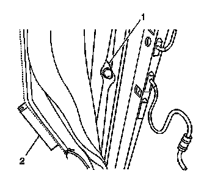

Front Seat Head Restraint Retainer Replacement
Front Seat Head Restraint Retainer Replacement
Removal Procedure
1. Remove the seat back trim. Refer to Front Seat Back Trim Replacement (Front Seat Back Trim Replacement) .
2. Remove the head restraint. Refer to Front Seat Head Restraint Replacement (Front Seat Head Restraint Replacement) .

3. Release the seat cover J channel (2) from the seat back frame.
4. Pinch the head restraint retainer (1) to release it from the seat frame.
Installation Procedure
1. Install the seat cover J channel (2) to the seat back frame.
2. Install the seat back trim. Refer to Front Seat Back Trim Replacement (Front Seat Back Trim Replacement) .
3. Insert the head restraint retainer through the seat cover and into the frame.
4. Install the head restraint. Refer to Front Seat Head Restraint Replacement (Front Seat Head Restraint Replacement) .